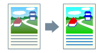

Можно отрегулировать цвет, яркость, контраст и сопоставление цветов.

1.
Откройте вкладку [Качество].
2.
Выберите [Ручная настройка цвета] → нажмите [Настройка цвета].
3.
Установите цвет, яркость и контраст на вкладке [Регулировка цвета].
4.
Если нужно установить сопоставление цветов или настройку коэффициента контрастности, откройте вкладку [Сопоставление] → задайте соответсвующие настройки.
5.
Нажмите [ОК].
Поддерживаемые принтеры
Цветные принтеры